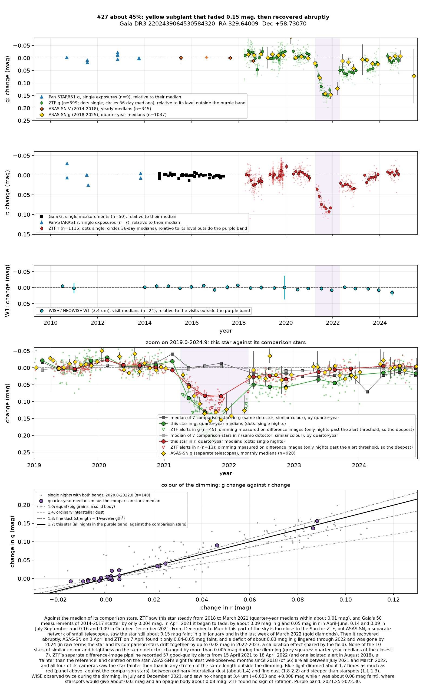
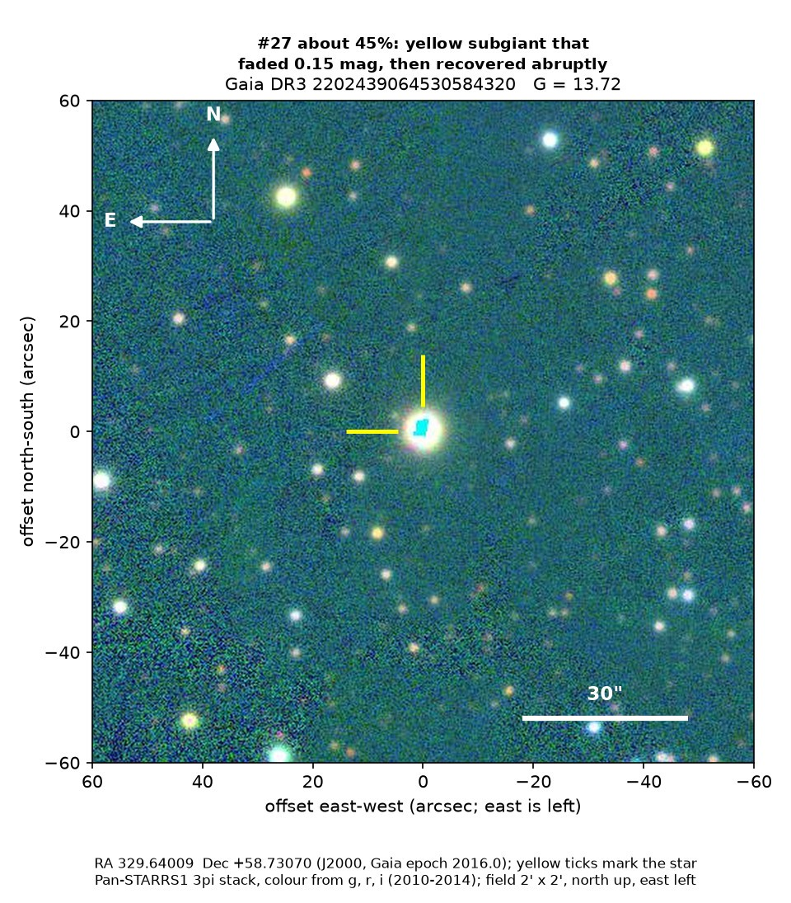
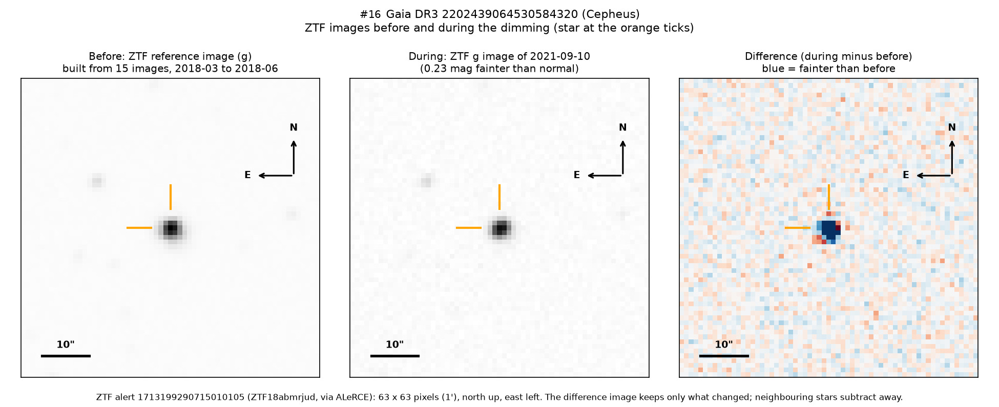

Professor of Mathematics
Paata Ivanisvili
Department of Mathematics, University of California, Irvine

Candidate 27: a yellow subgiant that faded for a year, then recovered in a week
Why this estimate. The dimming is certainly real: ZTF (the Zwicky Transient Facility, a survey telescope at Palomar Observatory in California) and ASAS-SN (a worldwide network of small telescopes) both recorded it. Its colour, unchanged infrared brightness and lack of rotation argue against starspots, and its motion shows that it is not a young star. The estimate is not higher because there is no spectrum, only ZTF measured the colour, the quick recovery rests on a few ASAS-SN nights, and what the dust is, and where it lies, remains open.
How to read the pictures. The finder chart shows a patch of sky two arcminutes across, about a fifteenth of the Moon’s width, with north up and east to the left. The star sits between the two yellow ticks, and the white bar is 30 arcseconds long. On a light curve the vertical axis is magnitude, a brightness scale on which larger numbers mean fainter stars, and it is drawn so that down means fainter. Purple shading marks the dimming. Each survey uses slightly different filters, so each is compared with its own normal level. The ZTF pictures show ZTF’s reference image of the star, an image taken during the dimming, and the difference between the two, in which only what changed remains: blue means fainter and red brighter.

What changed. The star is a yellow subgiant in Cepheus, about 870 parsecs (2,800 light-years) away and seen through a lot of interstellar dust. It has used up the hydrogen in its core and swollen to about four and a half times the Sun’s size. After at least six steady years it faded from April 2021, and from September 2021 to the end of March 2022 it stayed about 13 per cent fainter in green light and 8 per cent in red.
ZTF cannot observe the star from December to March, but ASAS-SN still found it about 0.15 magnitudes faint in the last week of March 2022; on 3 April ASAS-SN and on 7 April ZTF found it only 0.04 to 0.05 magnitudes faint, so most of the recovery took about a week. ZTF’s alert system, which compares each new image with a reference image, recorded 57 good-quality alerts, all fainter than the reference and centred on the star, and ASAS-SN’s eight faintest well-observed months all fall inside the dimming.
Why it might matter. Dust passing in front of the star is the likeliest cause. Green light dimmed about 1.7 times as much as red, between ordinary interstellar dust (about 1.4) and fine dust (1.8 to 2.2); starspots would give 1.1 to 1.3. Two NEOWISE visits during the dimming saw no change at 3.4 microns, which rules out an opaque body and argues strongly against spots. ZTF found no rotation in eight seasons, and the star’s age, motion and lack of an infrared excess rule out a young star with a dusty disc.
The abrupt end points to a sharp-edged structure: if it was dust, its trailing edge crossed the star, about 6 million km across, within about a week, at 10 km/s or more, so the structure was at least one to two astronomical units long (one is the Earth–Sun distance). A dusty disc or cloud orbiting the star or an unseen companion would fit, as in the long eclipses of EE Cephei and epsilon Aurigae, and the dimming would then recur, perhaps after many years; an unusually compact clump of interstellar dust is also possible. A spectrum would settle the star’s type and could reveal a companion.
No record of the dimming could be found. SIMBAD lists the star only under its Gaia number, and VSX (the variable-star index) has only a generic entry, based on a slight flicker in Gaia’s data of 2014 to 2017. The star is in no other variable-star catalogue consulted, nor among the dimming stars of Tzanidakis et al. (2025), and no transient report, Gaia alert or paper names it. ZTF’s alert system holds only machine-generated classifications.
- Star
- Gaia DR3 2202439064530584320, a reddened yellow subgiant
- Location
- RA 329.64009°, Dec +58.73070° (J2000), in Cepheus, 3.0 degrees north of the Milky Way’s mid-plane
- Distance
- about 870 parsecs (2,800 light-years)
- Brightness
- Gaia G = 13.72, far too faint for the eye
- Probability
- This candidate is unconfirmed. The percentage under the title is an estimate of the chance that it is a real, previously unrecorded case of the kind described. The estimate has not been checked by outside experts. See the introduction to all fifty-eight candidates.
- Caveat
- There is no spectrum, so the star’s temperature, size and reddening rest on Gaia’s models. The colour comes from ZTF alone, and the speed of the recovery rests on a few ASAS-SN nights. Two other stars, candidate 26 and candidate 43, dimmed over almost the same months, but they lie at 2,400 and 1,000 parsecs, so no single cloud could have dimmed all three; the comparison stars of all three stayed flat, which makes an instrumental cause unlikely, and the coincidence is most likely chance.

